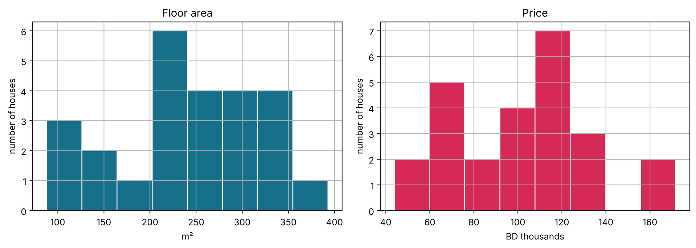
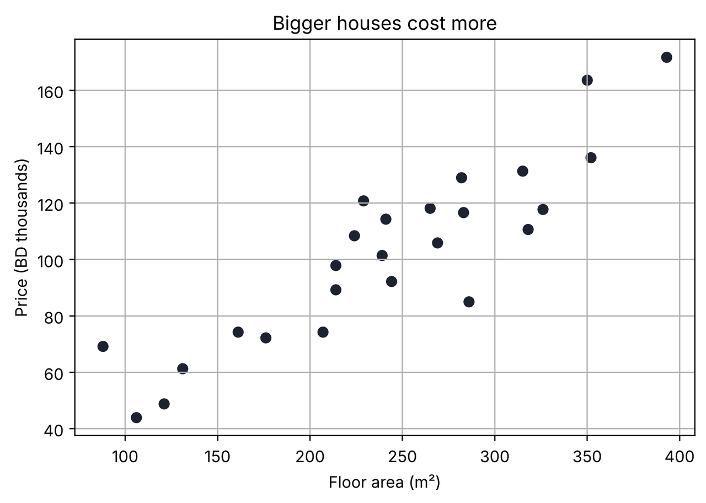
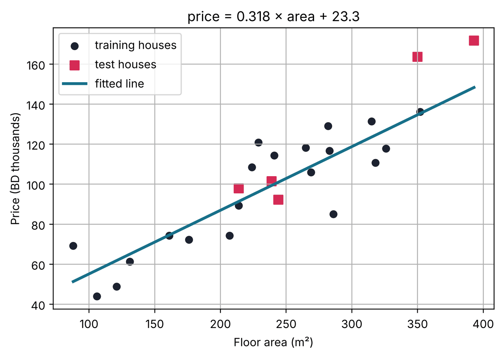
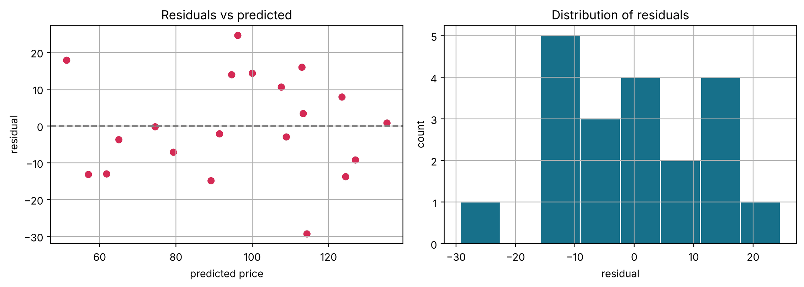
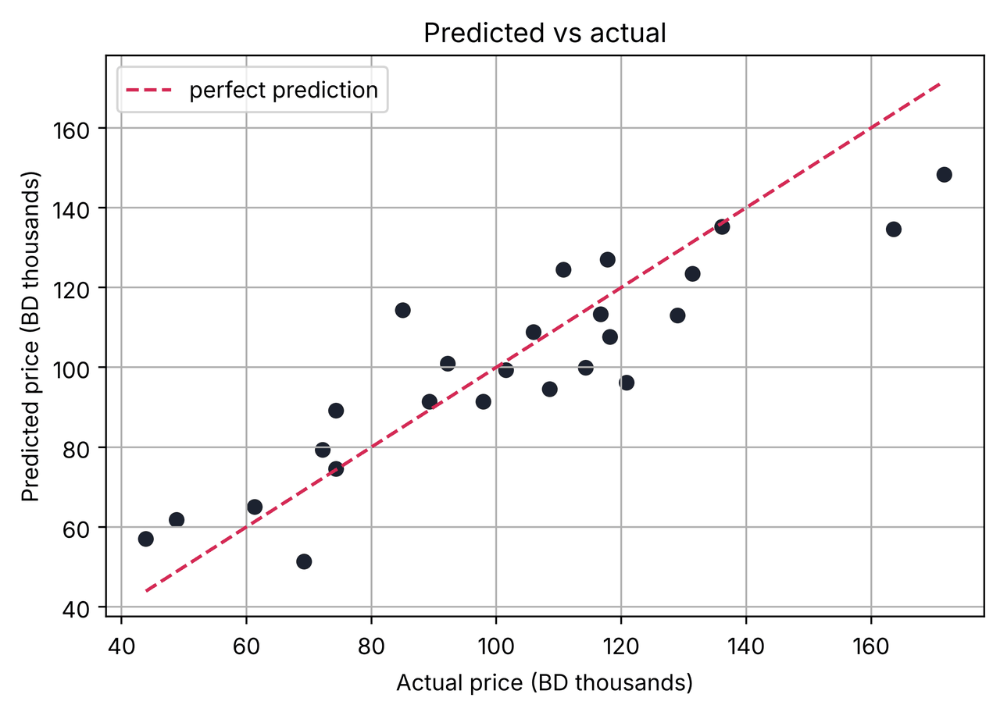

Lesson 3 · Linear regression in Python
Linear regression in Python, line by line.
A complete, runnable notebook that takes a real-style dataset from a CSV file to a trained, evaluated and visualised linear regression model. Every line of code is explained: hover over (or tap) a line to see what it does.
1 Hover over or tap any numbered line of code to highlight its explanation. Every output and chart below was produced by running this exact notebook.
1Import the libraries
Every Python data-science project starts by importing the tools it needs. We use four libraries: NumPy for maths, pandas for tables, Matplotlib for charts and scikit-learn for machine learning.
- %config InlineBackend.figure_format = "retina"1
- import numpy as np2
- import pandas as pd3
- import matplotlib.pyplot as plt4
- from sklearn.model_selection import train_test_split5
- from sklearn.linear_model import LinearRegression6
- from sklearn.metrics import mean_absolute_error, mean_squared_error7
- from sklearn.metrics import r2_score, mean_absolute_percentage_error7
-
- plt.rcParams["figure.figsize"] = (7, 4.5)8
- plt.rcParams["axes.grid"] = True9
2Load the dataset
The dataset records 25 houses: their floor area in m² and their price in thousands of Bahraini dinars (BD). It is stored as a CSV file in the course repository, so pandas can read it straight from the web.
- url = "https://raw.githubusercontent.com/SaeedSerwan/regression/main/data/house_size_price.csv"1
- df = pd.read_csv(url)2
- df.columns = ["area", "price"]3
- print("Rows and columns:", df.shape)4
- df.head()5
Rows and columns: (25, 2)
| area | price | |
|---|---|---|
| 0 | 244 | 92.2 |
| 1 | 269 | 105.9 |
| 2 | 106 | 43.9 |
| 3 | 224 | 108.5 |
| 4 | 214 | 89.3 |
3Explore the data
Before modelling, check the data is clean and get a feel for its scale.
- print("Missing values per column:")1
- print(df.isna().sum())2
- df.describe().round(1)3
Missing values per column: area 0 price 0 dtype: int64
| area | price | |
|---|---|---|
| count | 25.0 | 25.0 |
| mean | 241.4 | 102.2 |
| std | 80.3 | 32.1 |
| min | 88.0 | 43.9 |
| 25% | 207.0 | 74.3 |
| 50% | 241.0 | 105.9 |
| 75% | 286.0 | 118.2 |
| max | 393.0 | 171.7 |
Distributions
A histogram shows how the values of one variable are spread out.
- fig, axes = plt.subplots(1, 2, figsize=(11, 4))1
- axes[0].hist(df["area"], bins=8, color="#17708a", edgecolor="white")2
- axes[0].set(title="Floor area", xlabel="m²", ylabel="number of houses")3
- axes[1].hist(df["price"], bins=8, color="#d52a55", edgecolor="white")4
- axes[1].set(title="Price", xlabel="BD thousands", ylabel="number of houses")4
- plt.tight_layout()5
- plt.show()6

The relationship
A scatter plot places one dot per house, with the feature on the x-axis and the target on the y-axis. If the dots follow a straight-line trend, linear regression is a sensible model.
- plt.scatter(df["area"], df["price"], color="#1c2230")1
- plt.xlabel("Floor area (m²)")2
- plt.ylabel("Price (BD thousands)")2
- plt.title("Bigger houses cost more")3
- plt.show()4
-
- r = df["area"].corr(df["price"])5
- print(f"Correlation r = {r:.3f}")6

Correlation r = 0.901
A correlation close to +1 confirms a strong, positive, linear relationship.
4Prepare the data
scikit-learn expects the inputs (features, X) and the output (target, y) separately.
We also hold back some houses as a test set: the model never sees them during training, so they tell us how well it works on new data.
- X = df[["area"]]1
- y = df["price"]2
-
- X_train, X_test, y_train, y_test = train_test_split(3
- X, y, test_size=0.2, random_state=42)4
- print(f"Training houses: {len(X_train)} · test houses: {len(X_test)}")5
Training houses: 20 · test houses: 5
5Train the model
Training finds the slope $m$ and intercept $b$ of the line $\hat{y} = m\,x + b$ that make the squared errors on the training data as small as possible.
- model = LinearRegression()1
- model.fit(X_train, y_train)2
-
- m = model.coef_[0]3
- b = model.intercept_4
- print(f"price = {m:.4f} × area + {b:.2f}")5
price = 0.3180 × area + 23.34
Reading the result: the slope says each extra square metre adds about that many thousand BD to the price. The intercept is the predicted price of a 0 m² house. It is needed to position the line, but it has no practical meaning here.
6Make predictions
- y_pred = model.predict(X_test)1
-
- results = pd.DataFrame({2
- "area": X_test["area"],2
- "actual": y_test,2
- "predicted": y_pred.round(1),2
- })2
- results["error"] = (results["actual"] - results["predicted"]).round(1)3
- results4
| area | actual | predicted | error | |
|---|---|---|---|---|
| 8 | 214 | 97.9 | 91.4 | 6.5 |
| 16 | 239 | 101.5 | 99.3 | 2.2 |
| 0 | 244 | 92.2 | 100.9 | -8.7 |
| 23 | 350 | 163.6 | 134.6 | 29.0 |
| 11 | 393 | 171.7 | 148.3 | 23.4 |
7Evaluate the model
Each metric summarises the test errors in a different way:
| Metric | Meaning | Units |
|---|---|---|
| MAE | average size of an error | BD thousands |
| MSE | average squared error; punishes big misses | (BD thousands)² |
| RMSE | square root of MSE | BD thousands |
| R² | share of price variation explained (1 = perfect) | none |
| Adjusted R² | R² with a penalty for each feature | none |
| MAPE | average error as a % of the true price | % |
- mae = mean_absolute_error(y_test, y_pred)1
- mse = mean_squared_error(y_test, y_pred)2
- rmse = np.sqrt(mse)3
- r2 = r2_score(y_test, y_pred)4
- mape = mean_absolute_percentage_error(y_test, y_pred) * 1005
-
- n, p = len(y_test), X_test.shape[1]6
- adj_r2 = 1 - (1 - r2) * (n - 1) / (n - p - 1)7
-
- print(f"MAE = {mae:.2f} BD thousand")8
- print(f"MSE = {mse:.2f}")8
- print(f"RMSE = {rmse:.2f} BD thousand")8
- print(f"R² = {r2:.3f}")8
- print(f"Adjusted R² = {adj_r2:.3f}")8
- print(f"MAPE = {mape:.1f} %")8
MAE = 13.95 BD thousand MSE = 301.72 RMSE = 17.37 BD thousand R² = 0.750 Adjusted R² = 0.667 MAPE = 9.9 %
Check the formulas by hand
The library functions are not magic. Here are MAE and RMSE computed directly from their definitions: $\text{MAE} = \frac{1}{n}\sum|y_i-\hat y_i|$ and $\text{RMSE} = \sqrt{\frac{1}{n}\sum(y_i-\hat y_i)^2}$.
- errors = y_test - y_pred1
- print("MAE by hand:", round(np.mean(np.abs(errors)), 2))2
- print("RMSE by hand:", round(np.sqrt(np.mean(errors ** 2)), 2))3
-
- train_r2 = r2_score(y_train, model.predict(X_train))4
- print(f"R² on training data: {train_r2:.3f} · on test data: {r2:.3f}")5
MAE by hand: 13.95 RMSE by hand: 17.37 R² on training data: 0.769 · on test data: 0.750
8Visualise the fitted line
- line_x = np.linspace(df["area"].min(), df["area"].max(), 100)1
- line_y = model.predict(pd.DataFrame({"area": line_x}))2
-
- plt.scatter(X_train["area"], y_train, color="#1c2230", label="training houses")3
- plt.scatter(X_test["area"], y_test, color="#d52a55", marker="s", s=60, label="test houses")4
- plt.plot(line_x, line_y, color="#17708a", linewidth=2.5, label="fitted line")5
- plt.xlabel("Floor area (m²)")6
- plt.ylabel("Price (BD thousands)")6
- plt.title(f"price = {m:.3f} × area + {b:.1f}")6
- plt.legend()7
- plt.show()8

9Diagnose the model with residual plots
A good linear model leaves residuals that look like random noise: no curve, no funnel shape, centred on zero. A clear pattern means the model is missing something (for example, a curve; see the polynomial lesson).
- train_pred = model.predict(X_train)1
- residuals = y_train - train_pred2
-
- fig, axes = plt.subplots(1, 2, figsize=(11, 4))3
- axes[0].scatter(train_pred, residuals, color="#d52a55")4
- axes[0].axhline(0, color="grey", linestyle="--")5
- axes[0].set(title="Residuals vs predicted", xlabel="predicted price", ylabel="residual")6
- axes[1].hist(residuals, bins=8, color="#17708a", edgecolor="white")7
- axes[1].set(title="Distribution of residuals", xlabel="residual", ylabel="count")8
- plt.tight_layout()9
- plt.show()10

Predicted vs actual
If every prediction were perfect, all points would sit on the diagonal line $y = x$.
- all_pred = model.predict(X)1
- plt.scatter(y, all_pred, color="#1c2230")2
- lims = [y.min(), y.max()]3
- plt.plot(lims, lims, color="#d52a55", linestyle="--", label="perfect prediction")4
- plt.xlabel("Actual price (BD thousands)")5
- plt.ylabel("Predicted price (BD thousands)")5
- plt.title("Predicted vs actual")5
- plt.legend()6
- plt.show()7

10Use the model
The trained model can now price houses it has never seen.
- new_houses = pd.DataFrame({"area": [120, 250, 380]})1
- new_houses["predicted_price"] = model.predict(new_houses).round(1)2
- new_houses3
| area | predicted_price | |
|---|---|---|
| 0 | 120 | 61.5 |
| 1 | 250 | 102.8 |
| 2 | 380 | 144.2 |
Careful with extrapolation. The model learned from houses between roughly 80 and 400 m². A prediction for a 2,000 m² palace would be a pure guess: nothing in the data says the straight line continues that far.
Summary
| Step | Code |
|---|---|
| Load | pd.read_csv(url) |
| Split | train_test_split(X, y, test_size=0.2) |
| Train | LinearRegression().fit(X_train, y_train) |
| Predict | model.predict(X_test) |
| Evaluate | mean_absolute_error, mean_squared_error, r2_score, … |
| Diagnose | residual plots, predicted vs actual |
Exercises
- Change
random_state=42to another number and re-run everything. How much do the metrics change? Why? - Replace the URL with
.../data/car_age_resale_value.csv(rename the columns accordingly). Is the slope positive or negative? Interpret it. - Add a deliberately wrong row with
df.loc[len(df)] = [150, 300]right after loading. Which metrics change the most: MAE or RMSE? - Try
test_size=0.4. What happens to the reliability of the test metrics with fewer training houses?